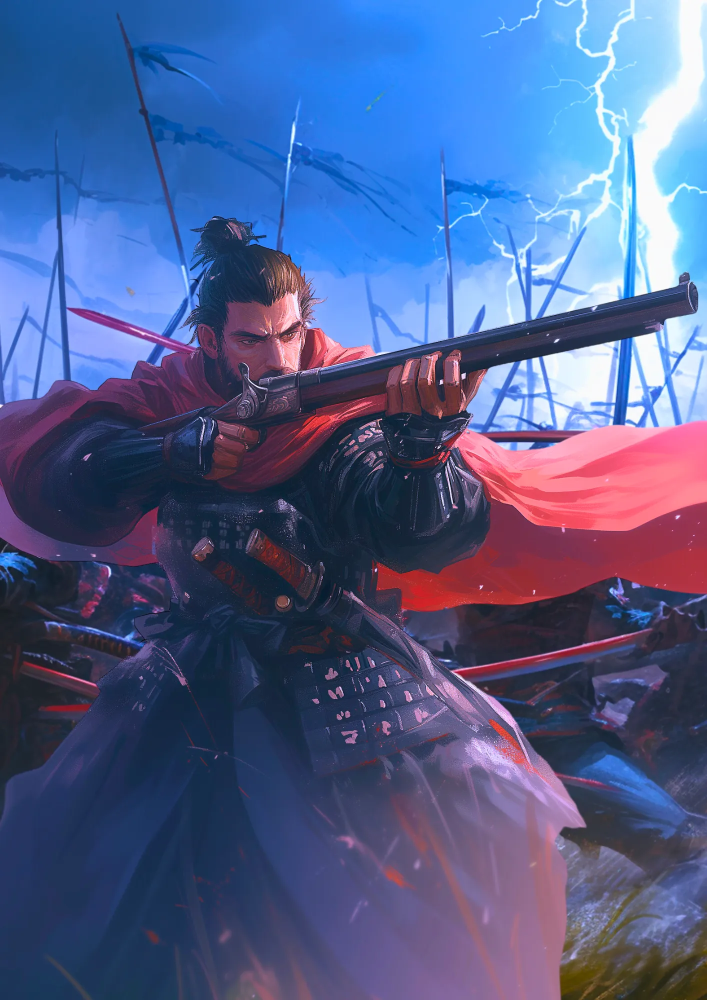

織田信長
尾張の大うつけ
革新的な武将
南蛮甲冑に赤いマントをつけるという奇抜な服装をしていた。火縄銃も革新的だったんだ。
進軍する兵士
桶狭間の戦いでは雷雨に紛れて今川義元の軍を奇襲した。
[人物プロフィール]
生没年
1534年～1582年
時代
1534年～1582年
身分
武士
すごく派手好きで、キラキラした服を着るのが好きだったんだ。

 織田信長ってどんなひと？
織田信長ってどんなひと？
戦国時代の武将で、革新的な戦術と政策で知られます。彼は日本を統一に導く途中で本能寺の変により倒れました。信長の大胆な行動とリーダーシップは、多くの人々に影響を与えました。
コラム
（カード右上）理想を持ち、信念に生きよ。
カードの効果解説！
三段撃ち
三段撃ちは、戦国時代の戦術で、織田信長が使用しました。鉄砲を三列に並べ、順番に撃つことで連続して敵を攻撃しました。この戦術により、信長は多くの戦いに勝利しました。

桶狭間の戦い
桶狭間の戦いは、1560年に織田信長が今川義元を討った戦いです。信長の奇襲作戦が成功し、大きな勝利を収めました。この戦いは、信長の勢力拡大の転機となりました。

弥生時代ってどんな時代？
弥生時代ってこんな時代 ってのをなんとなく。時代かぶってたりしたら関連人物 との繋がりについて纏める感 じで。弥生時代ってこんな時代 ってのをなんとなく。時代かぶってたりしたら関連人物 との繋がりについて纏める感 じで。


クイズ！：織田信長が行った「天下布武」とはなんでしょう？